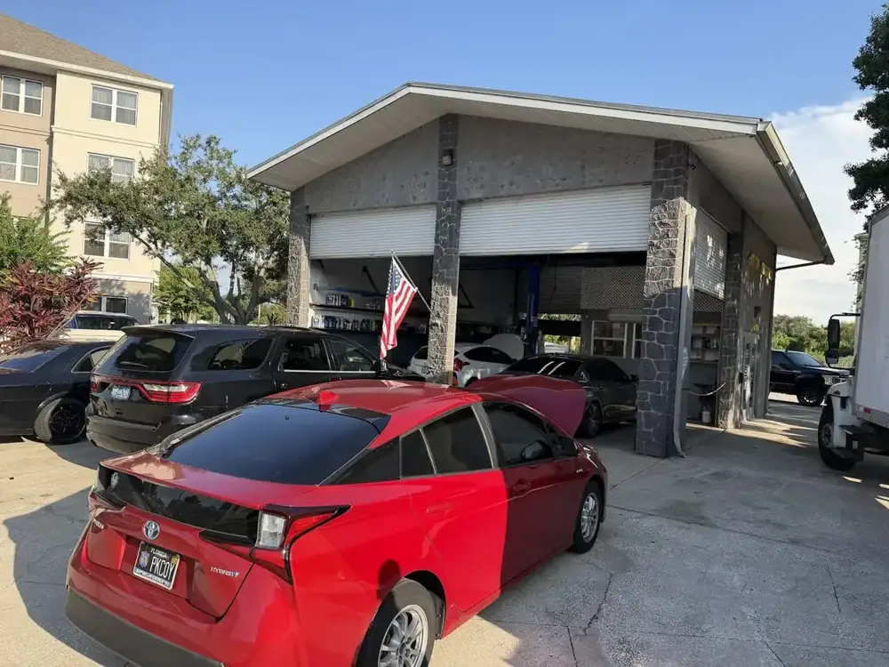
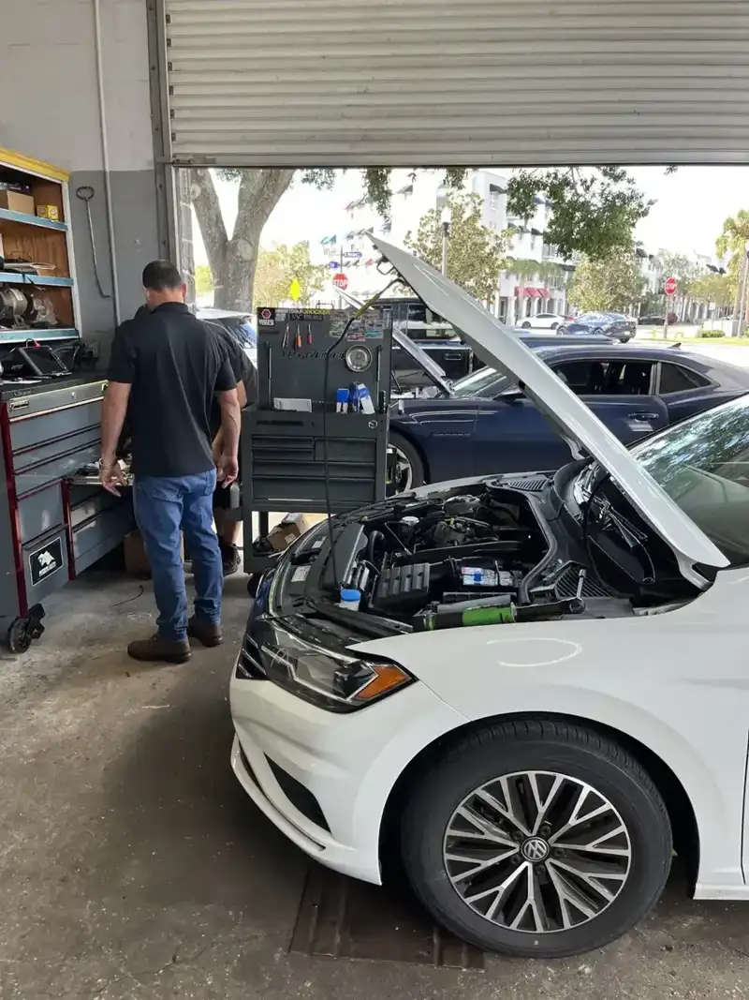
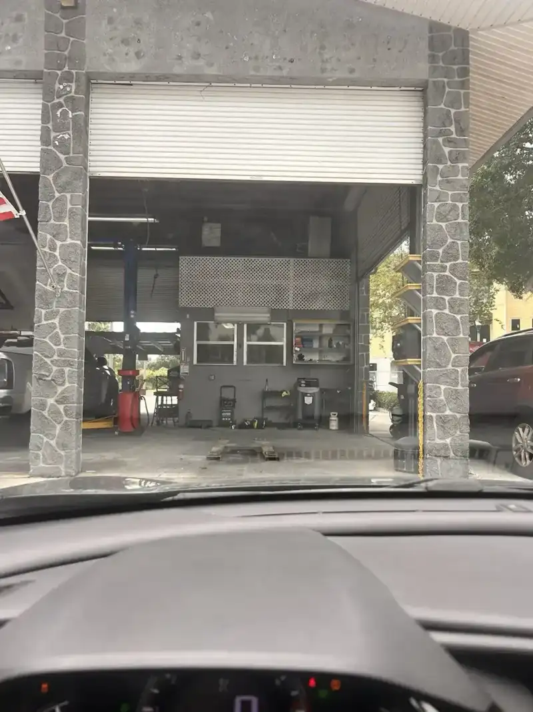
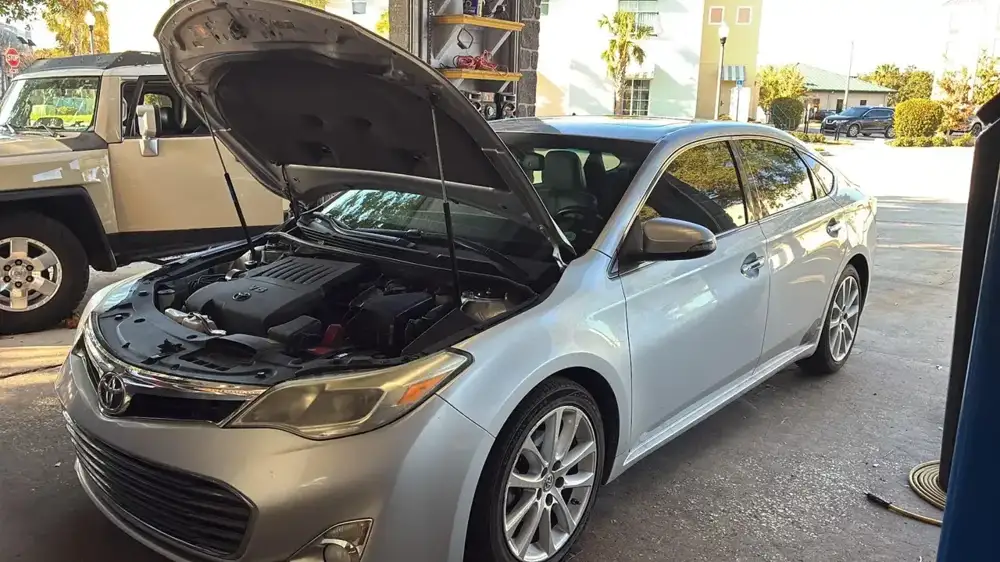
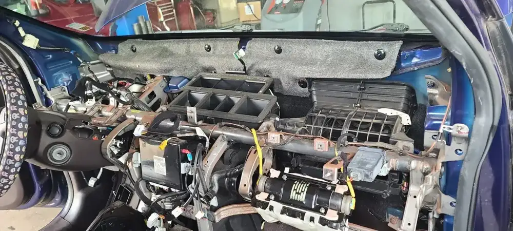
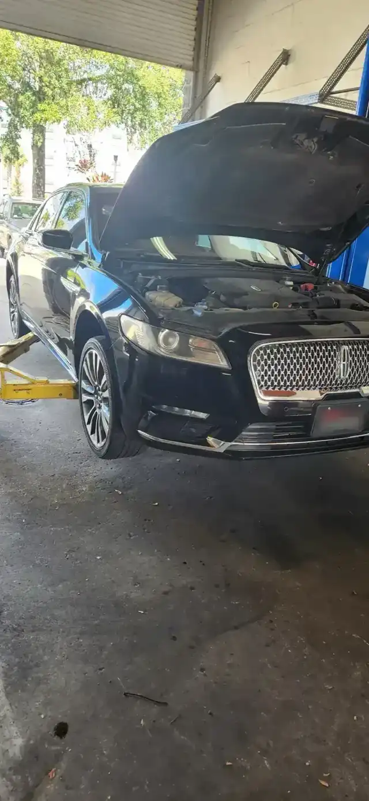
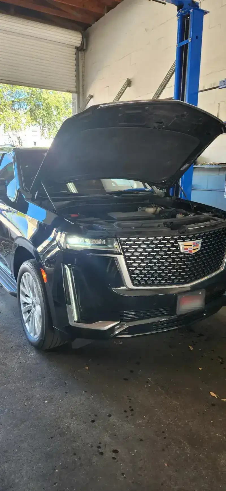

Item no. 01
Engine tune-up
Tune-ups to keep the engine running smoothly.
- Tune-up
- Engine check
Auto repair · Oldsmar, FL
A family owned shop on St Petersburg Dr E. Carlos explains what is wrong and why, then fixes it.
Family owned

Job tag · JCA
Google reviews
4.8
53 reviews
On the bench
Engine, brakes, AC, battery and electrical, plus bigger jobs like steering racks.
Shipping out






What customers say
“I was referred to Carlos at JCA Auto Mechanic by a friend, and I couldn’t be happier that I took the recommendation. I don’t know much about cars or mechanics, and I think a lot of people can relate to feeling a little skeptical when taking their vehicle to a repair shop. You never really know if you’re being told the truth or if you’re paying for repairs you don’t actually need.”
“Couldn’t be happier with our service here! We broke down on vacation and they were able to get us in first thing on Monday morning. Very honest, fast, and dependable. I wish more small businesses operated this way! Highly recommend!!”
“Great place, excellent mechanic. Diagnostic was quick and Carlos fixed my car in 3 hours. Happy to had such a great experience!”

The bench
JCA Automotive Repair is a stone-faced garage with open bays on St Petersburg Dr E in Oldsmar, with a flag out front. Customers call it clean, organized and professional.
Reviewers say Carlos is thorough and takes time to explain what happened and what the options are. One customer, new to car repair, said she never felt pressured. A family on vacation was seen first thing Monday after a breakdown.
Customers say they were told the truth about the repair.
Most jobs finish within a few days. One diagnostic and fix took 3 hours, per a reviewer.
Reviewers call it family owned and operated.
Hours & directions
600 St Petersburg Dr E, Oldsmar, FL 34677
Open Monday to Friday and Saturday morning. Closed Sunday. Call ahead if it is urgent.